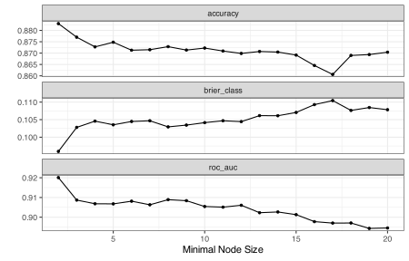
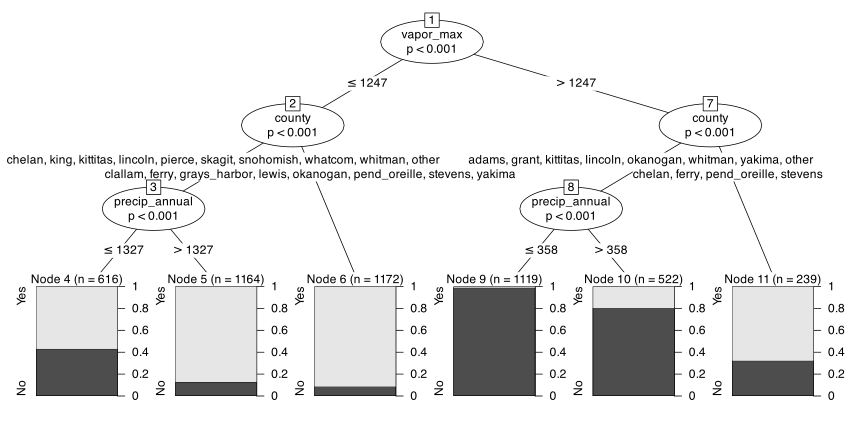

# fmt: skip
req_pkg <-
c("aorsf", "bonsai", "evtree", "partykit", "rpart", "rules",
"spatialsample", "tidymodels")
# Check to see if they are installed:
pkg_installed <- vapply(req_pkg, rlang::is_installed, logical(1))
# Install missing packages:
if (any(!pkg_installed)) {
install_list <- names(pkg_installed)[!pkg_installed]
pak::pak(install_list)
}19 Classification using Trees and Rules
In this chapter, we’ll describe the R packages for fitting different types of classification trees, along with their tidymodels interfaces.
We’ll skip several sections of the main text and go straight to the section on specific models. Many of the interfaces for low-level details, such as pruning or handling missing data, are internal to the R functions used to fit the models.
19.1 Requirements
You’ll need 8 packages (aorsf, bonsai, evtree, partykit, rpart, rules, spatialsample, tidymodels) for this chapter:
Let’s load the meta package and manage some between-package function conflicts.
library(tidymodels)
library(spatialsample)
library(bonsai)
library(rules)
library(probably)
library(mirai)
tidymodels_prefer()
theme_set(theme_bw() + theme(legend.position = "top"))
daemons(parallel::detectCores())
# Some general settings for tuning classification models:
cls_mtr <- metric_set(brier_class, roc_auc, pr_auc, mn_log_loss)
ctrl_grid <-
control_grid(
save_pred = TRUE,
save_workflow = TRUE,
parallel_over = "everything"
)As before, we’ll load the objects that were already computed for the forestation data:
19.2 Specific Tree-Based Models
Let’s look at how to fit the four main types of decision trees described in the text.
19.2.1 CART
The CART model is accessible using the rpart package. By default, it uses cost-complexity pruning, surrogate splits, and a one-standard error rule. There are arguments to supersede the defaults.
If you use the package directly, rpart::rpart() has only a formula method and does not automatically convert categorical predictors to indicator columns. For example:
library(rpart)
cart_fit <- rpart(class ~ county + elevation, data = forested_train)
cart_fit
#> n= 4832
#>
#> node), split, n, loss, yval, (yprob)
#> * denotes terminal node
#>
#> 1) root 4832 2118 Yes (0.56167 0.43833)
#> 2) county=chelan,clallam,clark,cowlitz,ferry,grays_harbor,jefferson,king,kitsap,kittitas,klickitat,lewis,mason,okanogan,pacific,pend_oreille,pierce,san_juan,skagit,skamania,snohomish,spokane,stevens,thurston,wahkiakum,whatcom 3276 767 Yes (0.76587 0.23413)
#> 4) county=clallam,cowlitz,ferry,grays_harbor,jefferson,kitsap,lewis,mason,pacific,pend_oreille,san_juan,skamania,snohomish,stevens,wahkiakum 1675 183 Yes (0.89075 0.10925) *
#> 5) county=chelan,clark,king,kittitas,klickitat,okanogan,pierce,skagit,spokane,thurston,whatcom 1601 584 Yes (0.63523 0.36477)
#> 10) elevation>=823 718 138 Yes (0.80780 0.19220) *
#> 11) elevation< 823 883 437 No (0.49490 0.50510)
#> 22) county=chelan,clark,king,pierce,skagit,thurston,whatcom 517 191 Yes (0.63056 0.36944)
#> 44) elevation>=93 370 82 Yes (0.77838 0.22162) *
#> 45) elevation< 93 147 38 No (0.25850 0.74150) *
#> 23) county=kittitas,klickitat,okanogan,spokane 366 111 No (0.30328 0.69672) *
#> 3) county=adams,asotin,benton,columbia,douglas,franklin,garfield,grant,island,lincoln,walla_walla,whitman,yakima 1556 205 No (0.13175 0.86825)
#> 6) elevation>=929.5 196 40 Yes (0.79592 0.20408) *
#> 7) elevation< 929.5 1360 49 No (0.03603 0.96397) *The terminal nodes show up in the output where the right-hand side has an asterisk. For example, this output:
718 138 Yes (0.80780 0.19220) *for a terminal node where the first level of the factor (“Yes” in this case) had 718 data points, and the other level had 138. The relative proportions of those frequencies are in parentheses.
The package has a number of S3 methods that are helpful. Along with the standard print() and predict() methods, there is also a plot() method that visualizes the splits. However, the partykit package has a better plotting mechanism. To use it, first use partykit::as.party() to convert the object’s format, then use plot().
Another function that is helpful that can extract the rule to a terminal node is:
path.rpart(cart_fit, 11)
#>
#> node number: 11
#> root
#> county=chelan,clallam,clark,cowlitz,ferry,grays_harbor,jefferson,king,kitsap,kittitas,klickitat,lewis,mason,okanogan,pacific,pend_oreille,pierce,san_juan,skagit,skamania,snohomish,spokane,stevens,thurston,wahkiakum,whatcom
#> county=chelan,clark,king,kittitas,klickitat,okanogan,pierce,skagit,spokane,thurston,whatcom
#> elevation< 823The rpart.control() function specifies how the model is trained. Any arguments that are passed to this function could also have been passed directly to rpart() itself. For example, we can control how many (or any) surrogate splits are determined when training. For example, to avoid surrogate splits (and use the whole predictor set):
no_surrogate_fit <- rpart(
class ~ .,
data = forested_train,
usesurrogate = 0,
maxsurrogate = 0
)
no_surrogate_fit
#> n= 4832
#>
#> node), split, n, loss, yval, (yprob)
#> * denotes terminal node
#>
#> 1) root 4832 2118 Yes (0.56167 0.43833)
#> 2) vapor_max< 1248 2952 515 Yes (0.82554 0.17446)
#> 4) roughness>=12.5 2491 301 Yes (0.87916 0.12084)
#> 8) temp_annual_max>=6.675 2391 239 Yes (0.90004 0.09996) *
#> 9) temp_annual_max< 6.675 100 38 No (0.38000 0.62000)
#> 18) longitude>=-120.6 32 5 Yes (0.84375 0.15625) *
#> 19) longitude< -120.6 68 11 No (0.16176 0.83824) *
#> 5) roughness< 12.5 461 214 Yes (0.53579 0.46421)
#> 10) county=clallam,grays_harbor,jefferson,kitsap,klickitat,mason,okanogan,pacific,pend_oreille,skamania,yakima 192 31 Yes (0.83854 0.16146) *
#> 11) county=asotin,chelan,clark,columbia,cowlitz,douglas,garfield,island,king,kittitas,lewis,lincoln,pierce,san_juan,skagit,snohomish,spokane,stevens,thurston,wahkiakum,whatcom 269 86 No (0.31970 0.68030) *
#> 3) vapor_max>=1248 1880 277 No (0.14734 0.85266)
#> 6) county=chelan,ferry,klickitat,okanogan,pend_oreille,spokane,stevens 521 253 No (0.48560 0.51440)
#> 12) precip_annual>=358.5 391 157 Yes (0.59847 0.40153)
#> 24) latitude>=47.76 253 69 Yes (0.72727 0.27273) *
#> 25) latitude< 47.76 138 50 No (0.36232 0.63768) *
#> 13) precip_annual< 358.5 130 19 No (0.14615 0.85385) *
#> 7) county=adams,asotin,benton,columbia,douglas,franklin,garfield,grant,kittitas,lincoln,walla_walla,whitman,yakima 1359 24 No (0.01766 0.98234) *Note that this did not affect the true splits.
The model has an internal variable importance score. Let’s
no_surrogate_fit$variable.importance
#> vapor_max county roughness temp_annual_max precip_annual
#> 1056.56 225.26 91.73 51.92 39.92
#> latitude longitude
#> 23.79 20.24A few points about this:
- This does not list the entire predictor set, only those that had at least one split.
- By default, the importance scores will include the effects of surrogate or competing splits. These may be at odds with what you would have seen with other types of splits.
Using tidymodels, partykit is the default engine for decision_tree(). Since it can fit both classification and regression models, we will need to set the model mode. For example:
library(tidymodels)
cart_fit <-
decision_tree(cost_complexity = 0.001, min_n = 50) |>
set_mode("classification") |>
fit(class ~ ., data = forested_train)
cart_fit
#> parsnip model object
#>
#> n= 4832
#>
#> node), split, n, loss, yval, (yprob)
#> * denotes terminal node
#>
#> 1) root 4832 2118 Yes (0.56167 0.43833)
#> 2) vapor_max< 1248 2952 515 Yes (0.82554 0.17446)
#> 4) roughness>=12.5 2491 301 Yes (0.87916 0.12084)
#> 8) temp_annual_max>=6.675 2391 239 Yes (0.90004 0.09996)
#> 16) county=chelan,clallam,columbia,cowlitz,ferry,garfield,grays_harbor,jefferson,king,kitsap,kittitas,klickitat,lewis,mason,okanogan,pacific,pend_oreille,pierce,san_juan,skagit,skamania,snohomish,spokane,stevens,thurston,wahkiakum,walla_walla,whatcom,yakima 2302 194 Yes (0.91573 0.08427)
#> 32) temp_annual_mean< 11.09 2267 174 Yes (0.92325 0.07675)
#> 64) precip_annual>=461.5 2184 142 Yes (0.93498 0.06502) *
#> 65) precip_annual< 461.5 83 32 Yes (0.61446 0.38554)
#> 130) county=ferry,okanogan 64 14 Yes (0.78125 0.21875) *
#> 131) county=chelan,kittitas,klickitat,spokane,yakima 19 1 No (0.05263 0.94737) *
#> 33) temp_annual_mean>=11.09 35 15 No (0.42857 0.57143) *
#> 17) county=asotin,clark,douglas,island,lincoln,whitman 89 44 No (0.49438 0.50562)
#> 34) precip_annual>=1938 18 0 Yes (1.00000 0.00000) *
#> 35) precip_annual< 1938 71 26 No (0.36620 0.63380)
#> 70) roughness>=30.5 29 11 Yes (0.62069 0.37931) *
#> 71) roughness< 30.5 42 8 No (0.19048 0.80952) *
#> 9) temp_annual_max< 6.675 100 38 No (0.38000 0.62000)
#> 18) longitude>=-120.6 32 5 Yes (0.84375 0.15625) *
#> 19) longitude< -120.6 68 11 No (0.16176 0.83824) *
#> 5) roughness< 12.5 461 214 Yes (0.53579 0.46421)
#> 10) county=clallam,grays_harbor,jefferson,kitsap,klickitat,mason,okanogan,pacific,pend_oreille,skamania,yakima 192 31 Yes (0.83854 0.16146)
#> 20) temp_annual_mean< 10.77 173 18 Yes (0.89595 0.10405) *
#> 21) temp_annual_mean>=10.77 19 6 No (0.31579 0.68421) *
#> 11) county=asotin,chelan,clark,columbia,cowlitz,douglas,garfield,island,king,kittitas,lewis,lincoln,pierce,san_juan,skagit,snohomish,spokane,stevens,thurston,wahkiakum,whatcom 269 86 No (0.31970 0.68030)
#> 22) precip_annual>=1395 61 25 Yes (0.59016 0.40984)
#> 44) county=chelan,king,lewis,pierce,skagit,snohomish 37 9 Yes (0.75676 0.24324) *
#> 45) county=clark,cowlitz,thurston,wahkiakum,whatcom 24 8 No (0.33333 0.66667) *
#> 23) precip_annual< 1395 208 50 No (0.24038 0.75962) *
#> 3) vapor_max>=1248 1880 277 No (0.14734 0.85266)
#> 6) county=chelan,ferry,klickitat,okanogan,pend_oreille,spokane,stevens 521 253 No (0.48560 0.51440)
#> 12) precip_annual>=358.5 391 157 Yes (0.59847 0.40153)
#> 24) latitude>=47.76 253 69 Yes (0.72727 0.27273)
#> 48) roughness>=8.5 201 44 Yes (0.78109 0.21891)
#> 96) latitude< 48.3 137 17 Yes (0.87591 0.12409) *
#> 97) latitude>=48.3 64 27 Yes (0.57812 0.42188)
#> 194) northness>=-53.5 47 16 Yes (0.65957 0.34043) *
#> 195) northness< -53.5 17 6 No (0.35294 0.64706) *
#> 49) roughness< 8.5 52 25 Yes (0.51923 0.48077)
#> 98) temp_annual_max< 15.1 34 13 Yes (0.61765 0.38235) *
#> 99) temp_annual_max>=15.1 18 6 No (0.33333 0.66667) *
#> 25) latitude< 47.76 138 50 No (0.36232 0.63768)
#> 50) precip_annual>=593 23 5 Yes (0.78261 0.21739) *
#> 51) precip_annual< 593 115 32 No (0.27826 0.72174) *
#> 13) precip_annual< 358.5 130 19 No (0.14615 0.85385)
#> 26) county=ferry 17 7 Yes (0.58824 0.41176) *
#> 27) county=chelan,klickitat,okanogan 113 9 No (0.07965 0.92035) *
#> 7) county=adams,asotin,benton,columbia,douglas,franklin,garfield,grant,kittitas,lincoln,walla_walla,whitman,yakima 1359 24 No (0.01766 0.98234) *There predict() and augment() methods have predictable results:
predict(cart_fit, head(forested_test))
#> # A tibble: 6 × 1
#> .pred_class
#> <fct>
#> 1 No
#> 2 No
#> 3 No
#> 4 Yes
#> 5 No
#> 6 Yes
augment(cart_fit, head(forested_test))
#> # A tibble: 6 × 20
#> .pred_class .pred_Yes .pred_No class year elevation eastness northness roughness
#> <fct> <dbl> <dbl> <fct> <dbl> <dbl> <dbl> <dbl> <dbl>
#> 1 No 0.01766 0.9823 No 2014 308 -70 -70 4
#> 2 No 0.01766 0.9823 No 2014 119 94 31 2
#> 3 No 0.01766 0.9823 No 2014 795 -74 66 39
#> 4 Yes 0.9350 0.06502 Yes 2014 1825 99 -9 78
#> 5 No 0.07965 0.9204 No 2014 126 83 -55 6
#> 6 Yes 0.9350 0.06502 Yes 2014 1056 99 7 57
#> # ℹ 11 more variables: dew_temp <dbl>, precip_annual <dbl>, temp_annual_mean <dbl>,
#> # temp_annual_min <dbl>, temp_annual_max <dbl>, temp_january_min <dbl>,
#> # vapor_min <dbl>, vapor_max <dbl>, county <fct>, longitude <dbl>, latitude <dbl>19.2.2 C4.5 and C5.0
There is no native R reference implementation for C4.5, although a Java-based implementation is available via RWeka::J48().
C5.0 trees and rules are available in the C50 package. There are x/y interfaces as well as one that takes a formula. There is also a C5.0Control() function that controls details related to growing and pruning trees.
An example usage is:
If you want to see the actual tree, use the summary() method:
summary(c5_fit)
#>
#> Call:
#> C5.0.formula(formula = class ~ ., data = forested_train)
#>
#>
#> C5.0 [Release 2.07 GPL Edition] Fri May 22 12:49:33 2026
#> -------------------------------
#>
#> Class specified by attribute `outcome'
#>
#> Read 4832 cases (17 attributes) from undefined.data
#>
#> Decision tree:
#>
#> county in {adams,benton,douglas,franklin,grant,lincoln,walla_walla,
#> : whitman}: No (1056/14)
#> county in {asotin,chelan,clallam,clark,columbia,cowlitz,ferry,garfield,
#> : grays_harbor,island,jefferson,king,kitsap,kittitas,klickitat,lewis,
#> : mason,okanogan,pacific,pend_oreille,pierce,san_juan,skagit,skamania,
#> : snohomish,spokane,stevens,thurston,wahkiakum,whatcom,yakima}:
#> :...precip_annual <= 464:
#> :...temp_annual_mean > 7.8:
#> : :...county in {clark,cowlitz,grays_harbor,island,jefferson,king,kitsap,
#> : : : lewis,mason,pacific,pend_oreille,pierce,san_juan,skagit,
#> : : : skamania,snohomish,thurston,wahkiakum,
#> : : : whatcom}: No (0)
#> : : county in {clallam,ferry,stevens}: Yes (55/17)
#> : : county in {asotin,chelan,columbia,garfield,kittitas,klickitat,
#> : : : okanogan,spokane,yakima}:
#> : : :...dew_temp > 0.03: No (484/39)
#> : : dew_temp <= 0.03:
#> : : :...longitude <= -119.4271: Yes (28/11)
#> : : longitude > -119.4271: No (7)
#> : temp_annual_mean <= 7.8:
#> : :...county in {chelan,kittitas}: No (3)
#> : county in {asotin,clallam,clark,columbia,cowlitz,ferry,garfield,
#> : : grays_harbor,island,jefferson,king,kitsap,klickitat,
#> : : lewis,mason,pacific,pend_oreille,pierce,san_juan,skagit,
#> : : skamania,snohomish,spokane,stevens,thurston,wahkiakum,
#> : : whatcom,yakima}: Yes (13)
#> : county = okanogan:
#> : :...latitude <= 48.45825: Yes (17)
#> : latitude > 48.45825:
#> : :...year > 2013: Yes (34/8)
#> : year <= 2013:
#> : :...eastness <= -63: No (6)
#> : eastness > -63:
#> : :...vapor_min <= 205: Yes (9/2)
#> : vapor_min > 205: No (4)
#> precip_annual > 464:
#> :...elevation <= 32:
#> :...precip_annual <= 1910: No (107/18)
#> : precip_annual > 1910:
#> : :...temp_annual_mean <= 10.69: Yes (26/4)
#> : temp_annual_mean > 10.69:
#> : :...dew_temp <= 6.99: Yes (2)
#> : dew_temp > 6.99: No (10/1)
#> elevation > 32:
#> :...latitude <= 45.73898:
#> :...county in {asotin,chelan,clallam,clark,columbia,cowlitz,ferry,
#> : : garfield,grays_harbor,island,jefferson,king,kitsap,
#> : : kittitas,klickitat,lewis,mason,okanogan,pacific,
#> : : pend_oreille,pierce,san_juan,skagit,snohomish,
#> : : spokane,stevens,thurston,wahkiakum,whatcom,
#> : : yakima}: No (22/3)
#> : county = skamania: Yes (4)
#> latitude > 45.73898:
#> :...dew_temp <= -4.05:
#> :...longitude <= -120.5846: No (54/6)
#> : longitude > -120.5846: Yes (41/5)
#> dew_temp > -4.05:
#> :...county in {asotin,clark,columbia,garfield,island,spokane,
#> : thurston}:
#> :...precip_annual > 630:
#> : :...roughness > 15: Yes (152/20)
#> : : roughness <= 15:
#> : : :...year <= 2010: Yes (6)
#> : : year > 2010: No (41/14)
#> : precip_annual <= 630:
#> : :...temp_january_min > 3.78: No (51/1)
#> : temp_january_min <= 3.78:
#> : :...vapor_min > 232: Yes (11/1)
#> : vapor_min <= 232:
#> : :...latitude <= 47.53998: No (25/2)
#> : latitude > 47.53998:
#> : :...roughness <= 18: No (20/6)
#> : roughness > 18: Yes (12/1)
#> county in {chelan,clallam,cowlitz,ferry,grays_harbor,
#> : jefferson,king,kitsap,kittitas,klickitat,lewis,
#> : mason,okanogan,pacific,pend_oreille,pierce,
#> : san_juan,skagit,skamania,snohomish,stevens,
#> : wahkiakum,whatcom,yakima}:
#> :...temp_annual_mean > 10.62:
#> :...longitude <= -122.5701:
#> : :...temp_annual_max <= 16.49: Yes (120/10)
#> : : temp_annual_max > 16.49:
#> : : :...vapor_max <= 1012: No (6/1)
#> : : vapor_max > 1012: Yes (34/11)
#> : longitude > -122.5701:
#> : :...roughness > 45: Yes (13)
#> : roughness <= 45:
#> : :...longitude <= -122.0837: No (67/11)
#> : longitude > -122.0837:
#> : :...roughness <= 4: No (2)
#> : roughness > 4: Yes (10)
#> temp_annual_mean <= 10.62:
#> :...temp_annual_max <= 6.84:
#> :...year <= 2007: Yes (3)
#> : year > 2007:
#> : :...dew_temp <= -3.88: Yes (4)
#> : dew_temp > -3.88: No (20/4)
#> temp_annual_max > 6.84:
#> :...vapor_max > 1201:
#> :...temp_annual_max <= 15: Yes (219/34)
#> : temp_annual_max > 15:
#> : :...longitude <= -120.6273: Yes (15/2)
#> : longitude > -120.6273:
#> : :...temp_annual_min <= -4.92: Yes (18/8)
#> : temp_annual_min > -4.92: No (9)
#> vapor_max <= 1201:
#> :...roughness <= 4:
#> :...longitude <= -122.6583: Yes (26/1)
#> : longitude > -122.6583:
#> : :...vapor_min <= 106: No (25/9)
#> : vapor_min > 106: Yes (5)
#> roughness > 4:
#> :...roughness <= 191: Yes (1893/82)
#> roughness > 191:
#> :...temp_annual_mean > 4.32: Yes (33/3)
#> temp_annual_mean <= 4.32:
#> :...eastness <= -75: Yes (2)
#> eastness > -75: No (8)
#>
#>
#> Evaluation on training data (4832 cases):
#>
#> Decision Tree
#> ----------------
#> Size Errors
#>
#> 49 349( 7.2%) <<
#>
#>
#> (a) (b) <-classified as
#> ---- ----
#> 2585 129 (a): class Yes
#> 220 1898 (b): class No
#>
#>
#> Attribute usage:
#>
#> 100.00% county
#> 78.15% precip_annual
#> 71.94% dew_temp
#> 66.85% temp_annual_mean
#> 64.49% elevation
#> 62.93% latitude
#> 50.50% temp_annual_max
#> 47.91% roughness
#> 47.45% vapor_max
#> 9.93% longitude
#> 2.63% year
#> 2.46% temp_january_min
#> 2.30% vapor_min
#> 0.60% eastness
#> 0.56% temp_annual_min
#>
#>
#> Time: 0.0 secsThe predict() and augment() methods work in the same way as rpart().
To fit (or tune) the tree using tidymodels, we can again use decision_tree() but specify that the "C5.0" engine. While there are no arguments for the cost-complexity or tree depth, min_n is the primary tuning parameter. There is a CF argument in the control function, but this parameter rarely has a significant effect on the fit.
For example:
c5_res <-
decision_tree(engine = "C5.0", min_n = tune()) |>
set_mode("classification") |>
tune_grid(
class ~ .,
resamples = forested_rs,
grid = tibble(min_n = 2:20)
)
autoplot(c5_res)
For this example, it prefers the deepest tree.
19.2.3 Conditional Inference Trees
These models can be accessed with the partykit package. The ctree() and possibly the ctree_control() functions are used to fit the model. The former takes a formula to fit the model. Important options in the control function are testtype (to specify the aspects of the test, such as using a Bonferroni correction), alpha (the significance method), minsplit (the minimum number of samples to contribute to splitting), and so on. Like rpart(), you can pass control options directly to ctree().
There is one limitation for this model:
length(levels(forested_train$county))
#> [1] 39
library(partykit)
#> Loading required package: grid
#> Loading required package: libcoin
#> Loading required package: mvtnorm
cit_fit <- ctree(class ~ ., data = forested_train)
#> Error in `doTest()`:
#> ! cannot search for unordered splits in >= 31 levelsWe can use a recipe step to limit the number of counties given to the model (see below).
To use this method via tidymodels, install and load the bonsai package. Let’s make a recipe that uses step_other() to consolidate infrequently occurring counties. We’ll combine this with the model object within a workflow:
library(bonsai)
ctree_rec <-
recipe(class ~ ., data = forested_train) |>
step_other(county, threshold = 0.025) #<- determined by trying a few values
ctree_fit <-
workflow(
ctree_rec,
# Let's deliberately make a very shallow tree
decision_tree(mode = "classification", engine = "partykit", min_n = 1500)
) |>
fit(forested_train)
ctree_fit
#> ══ Workflow [trained] ═══════════════════════════════════════════════════════════════
#> Preprocessor: Recipe
#> Model: decision_tree()
#>
#> ── Preprocessor ─────────────────────────────────────────────────────────────────────
#> 1 Recipe Step
#>
#> • step_other()
#>
#> ── Model ────────────────────────────────────────────────────────────────────────────
#>
#> Model formula:
#> ..y ~ year + elevation + eastness + northness + roughness + dew_temp +
#> precip_annual + temp_annual_mean + temp_annual_min + temp_annual_max +
#> temp_january_min + vapor_min + vapor_max + county + longitude +
#> latitude
#>
#> Fitted party:
#> [1] root
#> | [2] vapor_max <= 1247
#> | | [3] county in chelan, king, kittitas, lincoln, pierce, skagit, snohomish, whatcom, whitman, other
#> | | | [4] precip_annual <= 1327: Yes (n = 616, err = 43%)
#> | | | [5] precip_annual > 1327: Yes (n = 1164, err = 13%)
#> | | [6] county in clallam, ferry, grays_harbor, lewis, okanogan, pend_oreille, stevens, yakima: Yes (n = 1172, err = 9%)
#> | [7] vapor_max > 1247
#> | | [8] county in adams, grant, kittitas, lincoln, okanogan, whitman, yakima, other
#> | | | [9] precip_annual <= 358: No (n = 1119, err = 1%)
#> | | | [10] precip_annual > 358: No (n = 522, err = 20%)
#> | | [11] county in chelan, ferry, pend_oreille, stevens: Yes (n = 239, err = 32%)
#>
#> Number of inner nodes: 5
#> Number of terminal nodes: 6The partykit package has an excellent visualization tool
ctree_fit |>
extract_fit_engine() |>
# Use an option to vertically offset the labels so that they
# do not overlap
plot(ep_args = list(justmin = 15))
There is an as.party() method that can work with rpart and C5.0 model objects. After converting those models to the party format, you can use the plot function for them.
19.2.4 Globally Estimated Trees
The evtree package, based on partykit, can use genetic algorithms to train decision trees. It has a formula methods an includes arguments for:
minsplit: “the minimum sum of weights in a node in order to be considered for splitting.”maxdepth: “maximum depth of the tree. Note, that the memory requirements increase by the square of the maximum tree depth.”niterations: “in case the run does not converge, it terminates after a specified number of iterations defined by niterations.”ntrees: “the number of trees in the population.alpha: regulates the complexity part of the cost function. Increasing values of alpha encourage decreasing tree sizes.”
There are also parameters for the genetic algorithm operators (e.g., mutation rate, etc.).
Here’s an example where we deliberately limit the tree size (in order to show a plot):
library(evtree)
set.seed(8375)
ga_tree <- evtree(class ~ ., data = forested_train, maxdepth = 2)
ga_tree
#>
#> Model formula:
#> class ~ year + elevation + eastness + northness + roughness +
#> dew_temp + precip_annual + temp_annual_mean + temp_annual_min +
#> temp_annual_max + temp_january_min + vapor_min + vapor_max +
#> county + longitude + latitude
#>
#> Fitted party:
#> [1] root
#> | [2] latitude < 47.77
#> | | [3] precip_annual < 626: No (n = 1545, err = 6%)
#> | | [4] precip_annual >= 626: Yes (n = 1602, err = 15%)
#> | [5] latitude >= 47.77
#> | | [6] precip_annual < 359: No (n = 155, err = 14%)
#> | | [7] precip_annual >= 359: Yes (n = 1530, err = 19%)
#>
#> Number of inner nodes: 3
#> Number of terminal nodes: 4Visually:
Currently, there is no tidymodels interface for this model.
19.2.5 Oblique Trees
Oblique trees can be fit using a package intended for random forest models called aorsf. To fit a single decision tree:
library(aorsf)
# Directly:
set.seed(82)
obl_tree <- orsf(class ~ ., data = forested_train, n_tree = 1)
# Via Tidymodels, also requires the bonsai package:
set.seed(82)
obl_tm_tree <-
rand_forest(mode = "classification", engine = "aorsf", trees = 1) |>
fit(class ~ ., data = forested_train)
obl_tree
#> ---------- Oblique random classification forest
#>
#> Linear combinations: Accelerated Logistic regression
#> N observations: 4832
#> N classes: 2
#> N trees: 1
#> N predictors total: 16
#> N predictors per node: 8
#> Average leaves per tree: 79
#> Min observations in leaf: 5
#> OOB stat value: 0.90
#> OOB stat type: AUC-ROC
#> Variable importance: anova
#>
#> -----------------------------------------There is no interface for printing or plotting a single tree, although we can check its variable importance:
obl_tree |>
orsf_vi() |>
tibble::enframe() |>
print(n = 16)
#> # A tibble: 16 × 2
#> name value
#> <chr> <dbl>
#> 1 precip_annual 0.35
#> 2 dew_temp 0.2222
#> 3 latitude 0.1923
#> 4 temp_annual_max 0.1579
#> 5 longitude 0.15
#> 6 roughness 0.12
#> 7 county 0.1136
#> 8 temp_january_min 0.09091
#> 9 eastness 0.08696
#> 10 vapor_max 0.07407
#> 11 elevation 0.06897
#> 12 temp_annual_mean 0.06667
#> 13 northness 0.03571
#> 14 vapor_min 0
#> 15 temp_annual_min 0
#> 16 year 0There are several other packages on CRAN to fit similar models, LDATree, ODRF, and PPforest, as well as the archived package nodeHarvest.
19.3 Rule-Based Models
C5.0 rules can also be fit using the C50 package, using the rules = TRUE option. As an example:
library(C50)
c5_rules_fit <- C5.0(class ~ ., rules = TRUE, data = forested_train)
c5_rules_fit
#>
#> Call:
#> C5.0.formula(formula = class ~ ., data = forested_train, rules = TRUE)
#>
#> Rule-Based Model
#> Number of samples: 4832
#> Number of predictors: 16
#>
#> Number of Rules: 22
#>
#> Non-standard options: attempt to group attributes
summary(c5_rules_fit)
#>
#> Call:
#> C5.0.formula(formula = class ~ ., data = forested_train, rules = TRUE)
#>
#>
#> C5.0 [Release 2.07 GPL Edition] Fri May 22 12:49:40 2026
#> -------------------------------
#>
#> Class specified by attribute `outcome'
#>
#> Read 4832 cases (17 attributes) from undefined.data
#>
#> Rules:
#>
#> Rule 1: (39/1, lift 1.7)
#> dew_temp <= 6.99
#> precip_annual > 1910
#> temp_annual_mean > 10.69
#> -> class Yes [0.951]
#>
#> Rule 2: (1973/133, lift 1.7)
#> elevation > 32
#> roughness > 15
#> dew_temp > -4.05
#> precip_annual > 630
#> county in {asotin, chelan, clallam, clark, columbia, cowlitz, ferry,
#> garfield, grays_harbor, island, jefferson, king, kitsap,
#> kittitas, klickitat, lewis, mason, okanogan, pacific,
#> pend_oreille, pierce, san_juan, skagit, skamania, snohomish,
#> spokane, stevens, thurston, wahkiakum, whatcom, yakima}
#> latitude > 45.73898
#> -> class Yes [0.932]
#>
#> Rule 3: (33/2, lift 1.6)
#> roughness > 18
#> precip_annual > 464
#> temp_january_min <= 3.78
#> county = spokane
#> latitude > 47.53998
#> -> class Yes [0.914]
#>
#> Rule 4: (494/57, lift 1.6)
#> county in {clallam, ferry, stevens}
#> -> class Yes [0.883]
#>
#> Rule 5: (3776/1076, lift 1.3)
#> county in {asotin, chelan, clallam, clark, columbia, cowlitz, ferry,
#> garfield, grays_harbor, island, jefferson, king, kitsap,
#> kittitas, klickitat, lewis, mason, okanogan, pacific,
#> pend_oreille, pierce, san_juan, skagit, skamania, snohomish,
#> spokane, stevens, thurston, wahkiakum, whatcom, yakima}
#> -> class Yes [0.715]
#>
#> Rule 6: (1056/14, lift 2.2)
#> county in {adams, benton, douglas, franklin, grant, lincoln,
#> walla_walla, whitman}
#> -> class No [0.986]
#>
#> Rule 7: (99/1, lift 2.2)
#> precip_annual <= 630
#> temp_january_min > 3.78
#> county in {asotin, columbia, garfield, island}
#> -> class No [0.980]
#>
#> Rule 8: (1053/35, lift 2.2)
#> temp_annual_min > -4.92
#> temp_annual_max > 15
#> longitude > -120.6273
#> -> class No [0.966]
#>
#> Rule 9: (512/29, lift 2.1)
#> elevation > 32
#> roughness <= 45
#> temp_annual_mean > 10.62
#> longitude > -122.5701
#> latitude > 45.73898
#> -> class No [0.942]
#>
#> Rule 10: (701/41, lift 2.1)
#> temp_annual_max > 16.49
#> -> class No [0.940]
#>
#> Rule 11: (524/31, lift 2.1)
#> elevation > 32
#> roughness <= 45
#> temp_annual_mean > 10.62
#> longitude > -122.5701
#> -> class No [0.939]
#>
#> Rule 12: (1477/90, lift 2.1)
#> dew_temp > 0.03
#> precip_annual <= 464
#> -> class No [0.938]
#>
#> Rule 13: (11, lift 2.1)
#> year <= 2013
#> eastness <= -63
#> precip_annual <= 464
#> county = okanogan
#> latitude > 48.45825
#> -> class No [0.923]
#>
#> Rule 14: (9, lift 2.1)
#> eastness > -75
#> roughness > 191
#> temp_annual_mean <= 4.32
#> temp_annual_max > 6.84
#> -> class No [0.909]
#>
#> Rule 15: (30/2, lift 2.1)
#> precip_annual > 464
#> precip_annual <= 630
#> vapor_min <= 232
#> county in {asotin, columbia, garfield, spokane}
#> latitude <= 47.53998
#> -> class No [0.906]
#>
#> Rule 16: (54/6, lift 2.0)
#> dew_temp <= -4.05
#> longitude <= -120.5846
#> -> class No [0.875]
#>
#> Rule 17: (35/4, lift 2.0)
#> elevation <= 32
#> dew_temp > 6.99
#> temp_annual_mean > 10.69
#> -> class No [0.865]
#>
#> Rule 18: (34/4, lift 2.0)
#> county in {clark, klickitat}
#> latitude <= 45.73898
#> -> class No [0.861]
#>
#> Rule 19: (107/18, lift 1.9)
#> elevation <= 32
#> precip_annual > 464
#> precip_annual <= 1910
#> -> class No [0.826]
#>
#> Rule 20: (21/3, lift 1.9)
#> roughness > 191
#> temp_annual_mean <= 4.32
#> -> class No [0.826]
#>
#> Rule 21: (54/10, lift 1.8)
#> roughness <= 4
#> temp_annual_mean <= 10.62
#> vapor_min <= 106
#> vapor_max <= 1201
#> longitude > -122.6583
#> -> class No [0.804]
#>
#> Rule 22: (136/28, lift 1.8)
#> year > 2010
#> roughness <= 15
#> county in {asotin, clark, columbia, garfield, island, spokane, thurston}
#> -> class No [0.790]
#>
#> Default class: Yes
#>
#>
#> Evaluation on training data (4832 cases):
#>
#> Rules
#> ----------------
#> No Errors
#>
#> 22 387( 8.0%) <<
#>
#>
#> (a) (b) <-classified as
#> ---- ----
#> 2555 159 (a): class Yes
#> 228 1890 (b): class No
#>
#>
#> Attribute usage:
#>
#> 100.00% county
#> 75.87% precip_annual
#> 73.53% dew_temp
#> 54.88% roughness
#> 53.37% elevation
#> 52.48% latitude
#> 26.28% longitude
#> 24.21% temp_annual_max
#> 21.79% temp_annual_min
#> 13.87% temp_annual_mean
#> 3.04% year
#> 2.73% temp_january_min
#> 1.74% vapor_min
#> 1.12% vapor_max
#> 0.41% eastness
#>
#>
#> Time: 0.1 secsThe rules package contains a parsnip model function called C5_rules().